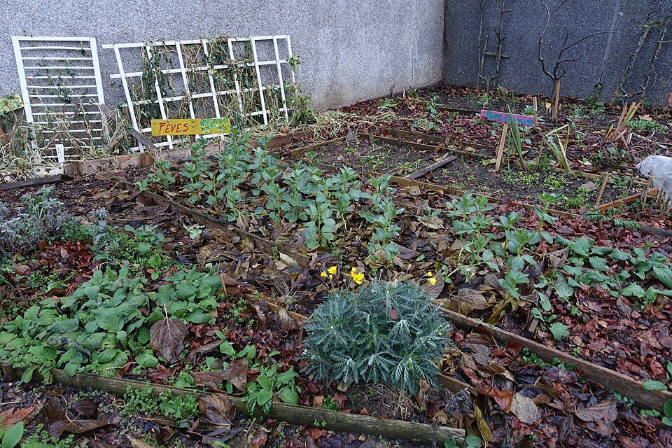

Jardins partagés
Créer des espaces cultivés et entretenus collectivement.
Transformer les espaces abandonnés en lieux utiles et durables.

Ce pôle prépare la transformation progressive des espaces délaissés en lieux de respiration, de production, de lien social, de biodiversité et d'usage collectif.
Définir des usages utiles, durables et acceptables pour des espaces abandonnés, avec les habitants et acteurs locaux concernés.
Ce pôle dialogue avec l'Observatoire pour repérer les sites, la Matériauthèque pour les aménagements et Solidarité & Insertion pour l'engagement local.
Des terrains, friches et espaces délaissés restent inutilisés alors qu'ils pourraient accueillir des usages sociaux, écologiques ou pédagogiques.
Identifier les espaces, comprendre leur potentiel, mobiliser les habitants et concevoir des usages temporaires ou durables adaptés.
Des espaces mieux connus, des usages utiles, des lieux plus accueillants et une contribution à la nature en ville lorsque cela est possible.
Repérer les terrains vacants, friches, espaces délaissés ou sous-utilisés.
Évaluer les contraintes d'accès, de sécurité, de propriété, d'usage et d'entretien.
Travailler avec habitants, collectivités, associations et acteurs de terrain.
Préparer des usages sobres, progressifs, réversibles et utiles au territoire.
Espaces de culture, de rencontre et d'apprentissage ouverts aux habitants.
Usages nourriciers à construire avec des partenaires compétents.
Lieux d'éducation à l'environnement, au réemploi et à la vie locale.
Plantations collectives pensées pour le long terme, l'entretien et la transmission.
Non. Il faut vérifier la propriété, la sécurité, l'accès, les contraintes techniques et les règles locales.
Les deux sont possibles selon le contexte. L'association prépare d'abord une méthode d'activation progressive.
L'entretien doit être prévu dès le départ avec les habitants, collectivités, associations ou partenaires concernés.
Reperer l'espace, qualifiér les contraintes et imaginer un usage transitoire avant un projet definitif.
Transformer un terrain disponible en support de lien social, d'apprentissage et de végétalisation.
Préparer un usage leger, sécurisé et reversible lorsque le site ne peut pas être rénové immédiatement.
La carte doit rester un outil de qualification, pas un inventaire public non vérifié.
Les friches sont des lieux complexes : anciens sites industriels, équipements publics fermés, bâtiments militaires, terrains commerciaux, espaces ferroviaires ou bâtiments d’habitat dégradé. Leur transformation demande une lecture fine de la propriété, de la pollution, des accès, du coût de remise en état et du projet de territoire.
Le contexte national rend cette question stratégique. La France vise le zéro artificialisation nette en 2050, avec un objectif intermédiaire de réduction de moitié de la consommation d’espaces naturels, agricoles et forestiers sur 2021-2031 par rapport à 2011-2021. Réutiliser les friches devient donc une réponse écologique, mais aussi économique et sociale.
TVF peut aider à passer du signalement à une première hypothèse d’usage : jardin partagé, espace nourricier, local associatif, atelier, espace culturel, renaturation légère ou projet de formation. L’association n’a pas vocation à remplacer les études techniques, mais à préparer le terrain : collecte d’informations, mobilisation citoyenne, repérage des usages, médiation et orientation vers les acteurs compétents.
Exemple fictif à visée pédagogiqueUne petite friche en entrée de bourg pourrait accueillir provisoirement un verger citoyen et des ateliers de sensibilisation, avant un projet urbain définitif. Exemple fictif, non réalisé par TVF.
La dépollution, la démolition, la sécurisation et les études peuvent représenter une part importante du budget.
Non. Le zonage, la pollution, les risques, la biodiversité et la propriété peuvent limiter ou orienter les usages.
Il peut éviter l’abandon prolongé, tester un besoin local et préparer une décision plus lourde.
Friches & Terrains Vivants traite les espaces où rien ne semble possible au premier regard : anciennes emprises, dents creuses, terrains en attente, sols contraints, abords dégradés ou espaces publics sous-utilisés.
Cartographier l'emprise, les accès, les limites, le voisinage et les usages informels.
Identifier risques visibles, clôtures, pollution suspectée, dépôts et contraintes d'accès.
Analyser propriété, urbanisme, sols, biodiversité, réseaux et compatibilité des usages.
Jardin partagé, verger, espace associatif, pédagogique, culturel, biodiversité ou usage transitoire.
Convention, assurance, entretien, responsabilités, règles d'ouverture et sortie du dispositif.
Un espace vivant exige un calendrier, des référents, des usages clairs et un suivi dans le temps.
| Usage possible | Conditions minimales | Bénéfice attendu |
|---|---|---|
| Jardin partagé | Sol compatible, accès, eau, règles d'usage et animation. | Cadre de vie, lien social, biodiversité de proximité. |
| Occupation transitoire | Durée, assurance, sécurité, responsabilités et sortie clarifiées. | Eviter l'abandon prolongé et tester un usage. |
| Espace culturel ou pédagogique | Accueil du public, accessibilité, sécurité, autorisations. | Redonner une fonction collective à un lieu délaissé. |
Non. Propriété, accès, sécurité et assurance doivent être clarifiés avant toute action.
Oui dans certains cas, mais uniquement après diagnostics et avec des usages compatibles.
Collectivités, propriétaires fonciers, urbanistes, paysagistes, associations, services environnement et habitants.
Chaque acteur peut contribuer à sa manière : signaler, proposer, financer, accueillir, réemployer, documenter ou porter un projet local.
Des réponses courtes pour comprendre le cadre, les limites et les prochaines étapes avant de contacter TVF ou de proposer une action.
Selon le site, les usages peuvent être écologiques, sociaux, culturels, agricoles, associatifs ou temporaires.
Pas sans diagnostic. Il faut vérifier la propriété, la sécurité, les sols, les accès, les assurances et les autorisations.
En privilégiant la remise en usage de l'existant et la transformation de lieux déjà dégradés plutôt que la consommation de nouveaux sols.